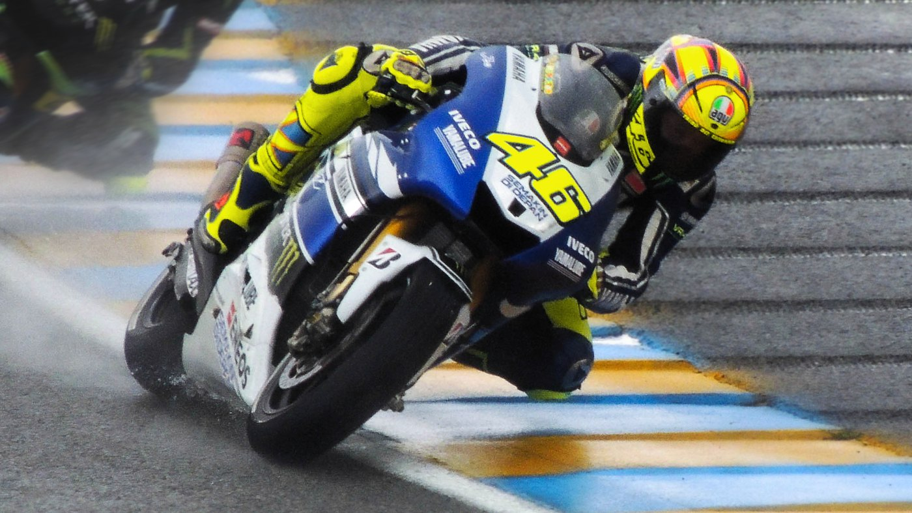

Cornering Aerodynamics of a MotoGP-Style Motorcycle
Final-year group design project at the University of Southampton, combining CFD with wind tunnel testing. I am the team leader, the aerodynamic design lead, and the lead for CAD development and manufacture of the test model.
Seeking graduate engineering roles. | Graduating July 2027 | Get in touch

The problem
Motorcycle aerodynamics is normally developed upright and in a straight line, because that is the easiest case to mesh and the easiest to reproduce in a wind tunnel. A racing motorcycle spends a large part of every lap leant over.
Under lean the flow stops being symmetric about the centreline, the frontal area changes, and the wake sits off to one side instead of square behind the machine. Bodywork developed upright is then working at an effective sideslip it was never designed for. The project therefore has to resolve side force and the yaw and roll moments alongside drag and downforce, and measure how all of them vary with lean angle.
This matters more on a bike than it would on a car. The rider is actively balancing the machine, and the largest aerodynamic asymmetry arrives at the point in the corner where the tyres have the least margin left.
My responsibilities
- Team leader. Coordinating the group, setting the programme of work, and liaising with our supervisors, Dr David Marshall and Dr Renan Soares.
- Aerodynamic design lead. Responsible for the aerodynamic direction of the project across both the CFD and the wind tunnel work.
- CAD development and manufacturing lead. Responsible for the CAD model and for the manufacture of the wind tunnel test model.
How the work is structured
- Geometry and CAD. Defining a representative MotoGP-style machine, in a form that is both meshable for CFD and manufacturable as a physical test model.
- CFD. Sweeping lean angle and flow conditions computationally, where the cost of an extra case is machine time rather than tunnel time.
- Wind tunnel model and mounting. Building the physical model and the arrangement that holds it at lean in the working section without the support dominating the measurement.
- Testing. Measuring forces and moments across the lean range.
- Correlation. Comparing prediction against measurement, and resolving the disagreements.
Why both CFD and the tunnel
CFD gives full-field information and lets us sweep conditions for machine time rather than tunnel time. The tunnel gives real measurements on a real model, with the uncertainty that comes with them. Where the two disagree, something is wrong in the geometry, the mesh, the rig or the assumptions, and working out which is a large part of the job.
I am running the CAD and the manufacture as well as the aerodynamics. Geometry that meshes cleanly is not always geometry you can build, mount at lean and instrument, and holding both roles keeps that in view early rather than late.
Relevant skills
- Leading a technical team on an open-ended problem with no predetermined outcome.
- Working across the full aerodynamic development process: geometry definition, CFD, physical model, wind tunnel testing, and correlation between prediction and measurement.
- Designing for manufacture and for test, alongside designing for analysis.